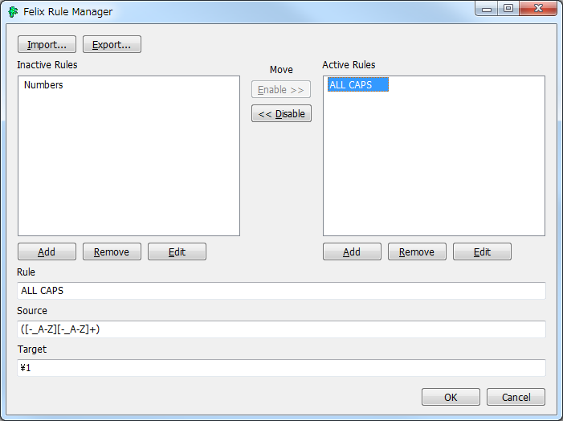
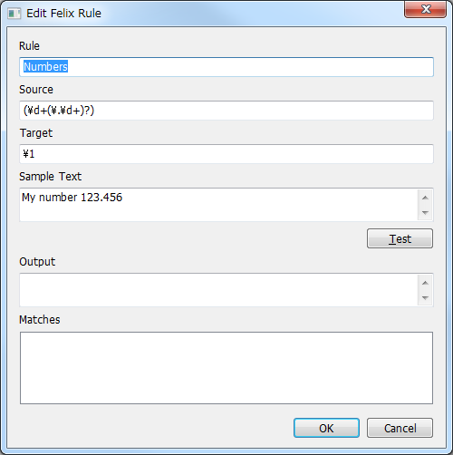
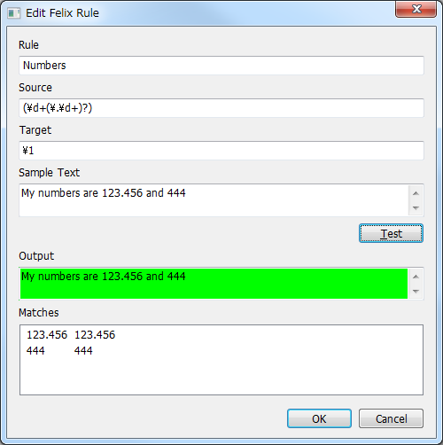

6.3.1. The Felix Rule Manager¶
The Felix Rule Manager lets you manage rules for automatic substitutions in your translations. See Rule-based Placement for details about this feature.
To call up the Rule Manager dialog box, select Tools ‣ Rule Manager... from the Felix memory menu.
The Rule Manager dialog box appears.

Felix Rule Manager dialog box
- Import
- Click this to import a Felix rules (.frules) file.
- Export
- Click this to export your rules to an .frules file.
- Rules list boxes
- These list boxes show the current active and inactive rules. Use the Enable and Disable buttons to enable and disable rules.
- Enable/Disable
- Use these buttons to enable and disable rules.
Note
Felix only uses active (enabled) rules for automatic placement.
- Add
- Add a rule to the corresonding list box. See The Edit Rule Dialog Box for details.
- Remove
- Remove the currently selected rule.
- Edit
- Edit the currently selected rule. See The Edit Rule Dialog Box for details.
6.3.1.1. The Edit Rule Dialog Box¶
Clicking on Edit or Add in the Felix Rule Manager dialog box calls up the Edit (Create) Felix Rule dialog box.

Felix Edit Rule dialog box
- Rule
- The name of the rule. Enter a descriptive name here. If you leave it blank, the “Source” text will be used as the rule name.
- Source
- The rule source. This is the pattern to match in the source segment.
- Target
- The rule target. This is what the pattern will be replaced with in the translation.
- Sample Text
- Some sample text for testing. This can be anything you like.
- Test
- Click this to test your rule against the sample text.

Test Results
- Output
- This shows the result of running your rule against the sample text. The output box will turn green briefly if there are matches in your sample text.
- Matches
- When you test your rule against the sample, all matches that are produced appear here. The left column is the matched text in the source, and the right column shows what it was replaced with.